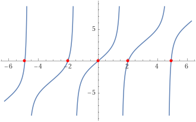

(p) ODE solution using SL
example1) Determine the normalized eigenfunctions of the problem
$$ y''+\lambda y=0,\quad y\left(0\right)=y\left(1\right)=0 $$sol1
$φ_{n}$ 을 eigenfunction 이라고 하자. $$ D^2\varphi_{n}=-\lambda_{n}w\left(x\right)\varphi_{n} $$ w(x)=1로 놓으면, $$ \left(D^2+\lambda_{n}\right)\varphi_{n}=0 $$ (1) $λ_{n}>0$ $$ \varphi_{n}=a_{n}\sin\sqrt{\lambda_{n}}x+b_{n}\cos\sqrt{\lambda_{n}}x $$ (2) $λ_{n}<0$ $$ \varphi_{n}=a_{n}e^{-\sqrt{-\lambda_{n}}x}+b_{n}e^{+\sqrt{-\lambda_{n}}x} $$ (3) $λ_{0}=0$ $$ \varphi_0=a_0+b_0x $$
(1) $λ_{n}>0$ $$ \varphi_{n}=a_{n}\sin\sqrt{\lambda_{n}}_{}x+b_{n}\cos\sqrt{\lambda_{n}}x $$ $$ \varphi_{n}\left(0\right)=0=b_{n},\quad b_{n}=0 $$ $$ \varphi_{n}\left(1\right)=0=a_{n}\sin\sqrt{\lambda_{n}},\quad\sqrt{\lambda_{n}}=n\pi,\,\,n=1,2,\cdots $$ ê³ ìœ í•¨ìˆ˜ê°€ orthonormal 함을 사용하여, 계수 $a_{n}$을 구하면, $$ \int_0^1dx\left\lbrack a_{n}\sin n\pi x\right\rbrack^2=1 $$ $$ \left|a_{n}\right|^2\cdot\frac12\int_{-1}^1dx\left\lbrack\sin^2n\pi x\right\rbrack=\left|a_{n}\right|^2\cdot\frac12\cdot1=\frac{\left|a_{n}\right|^2}{2}=1 $$ $$ \left|a_{n}\right|=\sqrt2 $$ $$ \varphi_{n}=\sqrt{2}\sin n\pi x $$
(2) $λ_{n}<0$ $$ \varphi_{n}=a_{n}e^{-\sqrt{-\lambda_{n}}x}+b_{n}e^{+\sqrt{-\lambda_{n}}x} $$ $$ \varphi_{n}\left(0\right)=0=a_{n}+b_{n} $$ $$ \varphi_{n}\left(1\right)=0=a_{n}e^{-\sqrt{-\lambda_{n}}}+b_{n}e^{+\sqrt{-\lambda_{n}}} $$ $$ a_{n}\left(e^{-\sqrt{-\lambda_{n}}}-e^{+\sqrt{-\lambda_{n}}}\right)=0 $$ $$ a_{n}=0\text{ or }\lambda_{n}=0 $$ $$ \varphi_{n}=0\text{ or 존재할 수 없음} $$
(3) $λ_{0}=0$ $$ \varphi_0=a_0+b_0x $$ $$ \varphi_0\left(0\right)=0=a_0,\quad a_0=0 $$ $$ \varphi_0\left(1\right)=0=b_0,\quad b_0=0 $$ $$ \varphi_0=0 $$
eigen-expansion을 수행한다. $$ y''+\lambda y=0 $$ $$ \sum\lambda_{n}c_{n}\varphi_{n}+\sum\lambda c_{n}\varphi_{n}=0\implies\sum\left(\lambda-\lambda_{n}\right)c_{n}\varphi_{n}=0 $$ orthogonality를 이용한다. $$ \left(\lambda-\lambda_{n}\right)c_{n}=0,\quad c_{n}=\frac{\lambda}{\lambda_{n}} $$ $$ y=\sum_{n=1}^{N}\frac{\lambda}{\lambda_{n}}\sqrt{2}\sin n\pi x $$
sol2
$φ_{n}$ 을 eigenfunction 이라고 하자. $$ \left(D^2+\lambda\right)\varphi_{n}=-\lambda_{n}w\left(x\right)\varphi_{n} $$ w(x)=1로 놓으면, $$ \left(D^2+\lambda+\lambda_{n}\right)\varphi_{n}=0 $$ (1) $λ+λ_{n}\ne0$ $$ \varphi_{n}=a_{n}\sin\sqrt{\lambda_{n}+\lambda}x+b_{n}\cos\sqrt{\lambda_{n}+\lambda}x $$ (2) $λ+λ_{n}$=0 $$ \varphi_{n}=a_{n}+b_{n}x $$
(1) $λ+λ_{n}\ne0$ $$ \varphi_{n}=a_{n}\sin\sqrt{\lambda_{n}+\lambda}x+b_{n}\cos\sqrt{\lambda_{n}+\lambda}x $$ $$ \varphi_{n}\left(0\right)=0=b_{n},\quad b_{n}=0 $$ $$ \varphi_{n}\left(1\right)=0=a_{n}\sin\sqrt{\lambda_{n}+\lambda},\quad\sqrt{\lambda_{n}+\lambda}=n\pi,\,\,n=1,2,\cdots $$ 계수 $a_{n}$을 구하면, $$ \int_0^1dx\left\lbrack a_{n}\sin n\pi x\right\rbrack^2=1 $$ $$ \left|a_{n}\right|^2\cdot\frac12\int_{-1}^1dx\left\lbrack\sin^2n\pi x\right\rbrack=\left|a_{n}\right|^2\cdot\frac12\cdot1=\frac{\left|a_{n}\right|^2}{2}=1 $$ $$ \left|a_{n}\right|=\sqrt2 $$ $$ \varphi_{n}=\sqrt{2}\sin n\pi x $$ (2) $λ+λ_{n}=0$ $$ \varphi_{n}=a_{n}+b_{n}x $$ $$ \varphi_{n}\left(0\right)=0=a_{n},\quad a_{n}=0 $$ $$ \varphi_{n}\left(1\right)=0=b_{n},\quad b_{n}=0 $$ $$ \varphi_{n}=0 $$
eigen-expansion을 수행한다. 따라서, $$ y=\sum_{n}c_{n}\sqrt{2}\sin n\pi x $$
example2) Determine the normalized eigenfunctions of the problem
$$ y''+2y=-x,\quad y\left(0\right)=0,\quad y\left(1\right)+y'\left(1\right)=0 $$sol1
$φ_{n}$ 을 eigenfunction 이라고 하자. $$ D^2\varphi_{n}=-\lambda_{n}w\left(x\right)\varphi_{n} $$ w(x)=1로 놓으면, $$ \left(D^2+\lambda_{n}\right)\varphi_{n}=0 $$ (1) $λ_{n}$≠0 $$ \varphi_{n}=a_{n}\sin\sqrt{\lambda_{n}}x+b_{n}\cos\sqrt{\lambda_{n}}x $$ (2) λ$_{n}$=0 $$ \varphi_{n}=a_{n}+b_{n}x $$ $c_{n}$ 은 0이 아니어야 한다.
(1) $λ_{n}≠0$ $$ \varphi_{n}=a_{n}\sin\sqrt{\lambda_{n}}x+b_{n}\cos\sqrt{\lambda_{n}}x $$ $$ \varphi_{n}\left(0\right)=0=b_{n},\quad b_{n}=0 $$ $$ \varphi_{n}\left(1\right)+\varphi_{n}'\left(1\right)=0=a_{n}\left(\sin\sqrt{\lambda_{n}}+\sqrt{\lambda_{n}}\cos\sqrt{\lambda_{n}}\right) $$ $$ 0=\sin\sqrt{\lambda_{n}}+\sqrt{\lambda_{n}}\cos\sqrt{\lambda_{n}} $$ $$ 0=\tan\sqrt{\lambda_{n}}+\sqrt{\lambda_{n}} $$ 계수 $λ_{n}$을 구하면,
 $$ \lambda_{n}=2.0288,4.9132,7.9787,11.086,14.207,\cdots,\quad n=1,2,3,\cdots $$
(2) $λ_{n}=0$ $$ \varphi_{n}=a_{n}+b_{n}x $$ $$ \varphi_{n}\left(0\right)=0=a_{n},\quad a_{n}=0 $$ $$ \varphi_{n}\left(1\right)+\varphi_{n}'\left(1\right)=2b_{n}=0,\quad b_{n}=0 $$ 따라서, λ$_{n}$=0 은 ê³ ìœ ê°’ì´ 될 수 없다.
ê³ ìœ í•¨ìˆ˜ì˜ 계수를 구해보자. $$ \int_0^1dx\left\lbrack a_{n}\sin\sqrt{\lambda_n}x\right\rbrack^2=1 $$ $$ \left|a_{n}\right|^2\int_0^1dx\left\lbrack\sin^2\sqrt{\lambda_n}x\right\rbrack=\frac{\left|a_{n}\right|^2}{2}\int_0^1dx\left\lbrack1-\cos2\sqrt{\lambda_n}x\right\rbrack $$ $$ 1=\frac{\left|a_{n}\right|^2}{2}\left(1-\left.\frac{1}{2\sqrt{\lambda_n}}\sin2\sqrt{\lambda_n}x\right|_0^1\right)=\frac{\left|a_{n}\right|^2}{2}\left(1-\frac{1}{2\sqrt{\lambda_n}}\sin2\sqrt{\lambda_n}\right) $$ $$ \left|a_{n}\right|^2=\frac{2}{1-\frac{1}{2\sqrt{\lambda_n}}\sin2\sqrt{\lambda_n}} $$ since, $0=\sin\sqrt{\lambda_{n}}+\sqrt{\lambda_{n}}\cos\sqrt{\lambda_{n}}$ $$ \left|a_{n}\right|^2=\frac{2}{1+\cos^2\sqrt{\lambda_n}} $$ $$ \varphi_{n}=\frac{\sqrt{2}\sin\sqrt{\lambda_{n}}x}{\left(1+\cos^2\sqrt{\lambda_{n}}\right)^{1/2}} $$
eigen-expansion 을 수행한다. $$ y''=-2y-x $$ $$ \sum\lambda_{n}c_{n}\varphi_{n}=-2\sum c_{n}\varphi_{n}-x $$ $$ \sum\left(\lambda_{n}-2\right)c_{n}\varphi_{n}=x $$ orthogonality 를 이용한다. $$ \left(\lambda_{n}-2\right)c_{n}=\langle x\left|\right.\varphi_{n}\rangle $$ $$ c_{n}=\frac{1}{\lambda_{n}-2}\langle x\left|\right.\varphi_{n}\rangle $$ $$ \langle x|\varphi_{n}\rangle=\frac{\sqrt{2}}{\left(1+\cos^2\sqrt{\lambda_{n}}\right)^{1/2}}\int_0^1dx\left\lbrack x\sin\sqrt{\lambda_{n}}x\right\rbrack=\frac{2\sqrt2\sin\sqrt{\lambda_{n}}}{\lambda_{n}\left(1+\cos^2\sqrt{\lambda_{n}}\right)^{1/2}} $$ 따라서, $$ y=\sum_{n=1}^{N}\frac{2\sqrt2\sin\sqrt{\lambda_{n}}\sin\sqrt{\lambda_{n}}x}{\lambda_{n}\left(\lambda_{n}-2\right)\left(1+\cos^2\sqrt{\lambda_{n}}\right)^{1/2}} $$
sol2
$$ y''+2y=-x $$ $φ_{n}$ 을 eigenfunction 이라고 하자. 따라서, 위 미분 ë°©ì •ì‹ì˜ 해는 $$ y=\sum c_{n}\varphi_{n} $$ eigenfunction 구하면, $$ \left(D^2+2\right)\varphi_{n}=-\lambda_{n}w\left(x\right)\varphi_{n} $$ w(x)=1로 놓으면, $$ \varphi_{n}=a_{n}\sin\sqrt{2+\lambda_{n}}x+b_{n}\cos\sqrt{2+\lambda_{n}}x $$ boundary condition을 ì 용한다. 따라서, $$ \varphi_{n}\left(0\right)=0=b_{n},\quad b_{n}=0 $$ $$ \varphi_{n}\left(1\right)+\varphi_{n}'\left(1\right)=0=a_{n}\left(\sin\sqrt{2+\lambda_{n}}+\sqrt{2+\lambda_{n}}\cos\sqrt{2+\lambda_{n}}\right) $$ $$ 0=\tan\sqrt{2+\lambda_{n}}+\sqrt{2+\lambda_{n}} $$ $2+λ_{n}$을 구하면, $$ 2+\lambda_{n}=2.0288,4.9132,7.9787,11.086,14.207,\cdots,\quad n=1,2,3,\cdots $$ 따라서, $$ \lambda_{n}=0.0288,2.9132,5.9787,9.086,12.207,\cdots,\quad n=1,2,3,\cdots $$
ê³ ìœ í•¨ìˆ˜ì˜ 계수를 구해보자. $$ \int_0^1dx\left\lbrack a_{n}\sin\sqrt{2+\lambda_{n}}x\right\rbrack^2=1 $$ $$ \left|a_{n}\right|^2\int_0^1dx\left\lbrack\sin^2\sqrt{2+\lambda_{n}}x\right\rbrack=\frac{\left|a_{n}\right|^2}{2}\int_0^1dx\left\lbrack1-\cos2\sqrt{2+\lambda_{n}}x\right\rbrack $$ $$ 1=\frac{\left|a_{n}\right|^2}{2}\left(1-\frac{1}{2\sqrt{2+\lambda_{n}}}\sin2\sqrt{2+\lambda_{n}}\right) $$ $$ \left|a_{n}\right|^2=\frac{2}{1-\frac{1}{2\sqrt{2+\lambda_{n}}}\sin2\sqrt{2+\lambda_{n}}}=\frac{2}{1-\frac{\sin\sqrt{2+\lambda_{n}}\cos\sqrt{2+\lambda_{n}}}{\sqrt{2+\lambda_{n}}}} $$ since, $0=\sin\sqrt{2+\lambda_{n}}+\sqrt{2+\lambda_{n}}\cos\sqrt{2+\lambda_{n}}$ $$ \left|a_{n}\right|^2=\frac{2}{1+\cos^2\sqrt{2+\lambda_{n}}} $$ $$ \varphi_{n}=\frac{\sqrt{2}\sin\sqrt{2+\lambda_{n}}x}{\left(1+\cos^2\sqrt{2+\lambda_{n}}\right)^{1/2}} $$
$$ y=\sum_{n=1}^{N}\frac{\langle \varphi_{n}|x \rangle}{\lambda_{n}}\varphi_{n} $$ $$ \langle x | \varphi_{n}\rangle=\frac{\sqrt{2}}{\left(1+\cos^2\sqrt{2+\lambda_{n}}\right)^{1/2}}\int_0^1dx\left\lbrack x\sin\sqrt{2+\lambda_{n}}x\right\rbrack $$ $$ =\frac{2\sqrt2\sin\sqrt{1+\lambda_{n}}}{\left(2+\lambda_{n}\right)\left(1+\cos^2\sqrt{1+\lambda_{n}}\right)^{1/2}} $$ $$ y=\sum_{n=1}^{N}\frac{2\sqrt2\sin\sqrt{2+\lambda_{n}}\sin\sqrt{2+\lambda_{n}}x}{\lambda_{n}\left(2+\lambda_{n}\right)\left(1+\cos^2\sqrt{2+\lambda_{n}}\right)^{1/2}} $$
example3) Determine the normalized eigenfunctions of the problem (필수)
$$ \left(xy'\right)'+\frac{y}{x}=\frac{1}{x},\quad y\left(1\right)=y\left(e\right)=0 $$sol1
$$ D\left(xD\right)\varphi_{n}=-k_{n}^2w\left(x\right)\varphi_{n} $$ w=1/x 로 놓는다. eigen-value 와 eigen-function 을 구한다. $$ x^2\varphi_{n}''+x\varphi_n'+k_{n}^2\varphi_n=0 $$ $$ D^2+k_{n}^2=0 $$ (1) $k_{n}\ne0$ $$ \varphi_{n}=a_{n}\sin\left(k_{n}\ln x\right)+b_{n}\cos\left(k_{n}\ln x\right) $$ (2) $k_{n}=0$ $$ \varphi_{n}=a_{n}+b_{n}\ln x $$
(1) $k_{n}\ne0$ Applying B.C $$ \varphi_{n}\left(1\right)=0=b_{n} $$ $$ \varphi_{n}\left(e\right)=0=a_{n}\sin k_{n} $$ $$ k_{n}=n\pi,\quad n=1,2,3,\cdots $$ $$ \varphi_{n}=a_{n}\sin\left(n\pi\ln x\right) $$ 계수 $a_{n}$을 구하기 위해서는, $$ \left|a_{n}\right|^2\int_1^{e}dx\left\lbrack\frac{\sin^2\left(n\pi\ln x\right)}{x}\right\rbrack=1 $$ $$ \int_1^{e}dx\left\lbrack\frac{\sin^2\left(n\pi\ln x\right)}{x}\right\rbrack=\frac12\int_1^{e}dx\left\lbrack\frac{1-\cos\left(2n\pi\ln x\right)}{x}\right\rbrack $$ $$ =\frac12\left\lbrack\left.\ln x\right|_1^{e}-\left.\frac{1}{2n\pi}\sin\left(2n\pi\ln x\right)\right|_1^{e}\right\rbrack=\frac12 $$ $$ \left|a_{n}\right|=\frac{1}{\sqrt{2}} $$ $$ \varphi_{n}=\frac{1}{\sqrt{2}}\sin\left(n\pi\ln x\right) $$ (2) $k_{n}=0$ $$ \varphi_{n}\left(1\right)=0=a_{n} $$ $$ \varphi_{n}\left(e\right)=0=b_{n} $$ $$ \varphi_{n}=0 $$
eigen-expansion을 수행한다. $$ x\left(xy'\right)'-y=-1 $$ $$ \sum_{n}c_{n}n^2\pi^2\varphi_{n}-\sum c_{n}\varphi_{n}=-1 $$ $$ \sum c_{n}\varphi_{n}\left(1-n^2\pi^2\right)=1 $$ orthogonality 를 이용한다. $$ c_{n}\int_1^{e}dx\left\lbrack\frac{\varphi_{n}\varphi_{n}^{\ast}}{x}\left(1-n^2\pi^2\right)\right\rbrack=\langle \varphi_{n}|1\rangle_{w} $$ $$ c_{n}\int_1^{e}dx\left\lbrack\frac{\varphi_{n}\varphi_{n}^{\ast}}{x}\left(1-n^2\pi^2\right)\right\rbrack=c_{n}\left(1-n^2\pi^2\right) $$ $$ \langle \varphi_{n}|1 \rangle_{w}=\int_1^{e}dx\left\lbrack\frac{\sin\left(n\pi\ln x\right)}{\sqrt{2}x}\right\rbrack=-\frac{1}{\sqrt{2}n\pi}\cos\left(n\pi\ln x\right)\left|_1^{e}\right.=\frac{1}{\sqrt{2}n\pi}\left\lbrack \cos\left(n\pi\right)-1\right\rbrack $$ $$ c_{n}=\frac{1}{\sqrt{2}n\pi}\frac{\cos\left(n\pi\right)-1}{1-n^2\pi^2} $$ 따라서, $$ y=\sum\frac{1}{2n\pi}\frac{\cos\left(n\pi\right)-1}{1-n^2\pi^2}\sin\left(n\pi\ln x\right) $$
sol2
$$ \left\lbrack D\left(xD\right) -\frac1x \right\rbrack \varphi_{n}=-k_{n}^2w\left(x\right)\varphi_{n} $$ w=1/x 로 놓는다. ê·¸ë ‡ë‹¤ë©´, 위 ë¬¸ì œì˜ 미분 ë°©ì •ì‹ì„ 아래와 같이 변형된다. $$ x\left(xy'\right)'-y=-1 $$ eigen-expansion 으로 표현된 해는 다음과 같다. $$ y=\sum_{n=1}^{N}\frac{\langle \varphi_{n}|1 \rangle_{w}}{k_{n}^2}\varphi_{n} $$ eigenfunction 을 구한다. $$ x^2\varphi_{n}''+x\varphi_{n}'+\left(1+k_{n}^2\right)\varphi_{n}=0 $$ $$ D^2+\left(1+k_{n}^2\right)=0 $$ $$ \varphi_{n}=a_{n}\sin\left(\sqrt{1+k_{n}^2}\ln x\right)+b_{n}\cos\left(\sqrt{1+k_{n}^2}\ln x\right) $$ Applying B.C $$ \varphi_{n}\left(1\right)=0=b_{n} $$ $$ \varphi_{n}\left(e\right)=0=a_{n}\sin\sqrt{1+k_{n}^2} $$ $$ \sqrt{1+k_{n}^2}=n\pi,\quad n=1,2,3,\cdots $$ 여기에서, $k_{n}^{2}$ 는 다음과 같다. $$ k_{n}^2=n^2\pi^2-1,\quad n=1,2,3,\cdots $$ $$ \varphi_{n}=a_{n}\sin\left(n\pi\ln x\right) $$ 계수 $a_{n}$ 구하기 위해서는, $$ \left|a_{n}\right|^2\int_1^{e}dx\left\lbrack\frac{\sin^2\left(n\pi\ln x\right)}{x}\right\rbrack=1 $$ $$ \int_1^{e}dx\left\lbrack\frac{\sin^2\left(n\pi\ln x\right)}{x}\right\rbrack=\frac12\int_1^{e}dx\left\lbrack\frac{1-\cos\left(2n\pi\ln x\right)}{x}\right\rbrack $$ $$ =\frac12\left\lbrack\left.\ln x\right|_1^{e}-\left.\frac{1}{2n\pi}\sin\left(2n\pi\ln x\right)\right|_1^{e}\right\rbrack=\frac12 $$ $$ \left|a_{n}\right|=\frac{1}{\sqrt{2}} $$ $$ \varphi_{n}=\frac{1}{\sqrt{2}}\sin\left(n\pi\ln x\right) $$ 따라서, $$ y=\sum_{n=1}^{N}\frac{\langle\varphi_{n}|1 \rangle_{w}}{k_{n}^2}\varphi_{n} $$ $$ \langle \varphi_{n}|1 \rangle_{w} = \int_1^{e}dx\left\lbrack\frac{\sin\left(n\pi\ln x\right)}{\sqrt2x}\right\rbrack=-\frac{1}{\sqrt2n\pi}\cos\left(n\pi\ln x\right)\left|_1^{e}\right. $$ $$ =\frac{1}{\sqrt2n\pi}\left\lbrack \cos\left(n\pi\right)-1\right\rbrack $$ $$ y=\sum\frac{1}{2n\pi}\frac{\cos\left(n\pi\right)-1}{1-n^2\pi^2}\sin\left(n\pi\ln x\right) $$
스트룸-리우빌 이론 - 공돌이의 ìˆ˜í•™ì •ë¦¬ë…¸íŠ¸ (Angelo’s Math Notes)